CYLINDER BLOCK > REASSEMBLY |
| 1. INSTALL CYLINDER BLOCK STRAIGHT SCREW PLUG |
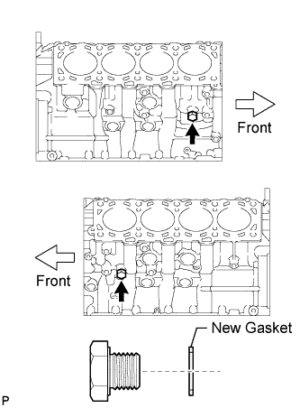 |
Install 2 new gaskets and the 2 straight screw plugs.
| 2. INSTALL NO. 1 OIL NOZZLE SUB-ASSEMBLY |
 |
Using a 5 mm hexagon wrench, install the 4 oil nozzles with the 4 bolts.
| 3. INSTALL PISTON PIN HOLE SNAP RING |
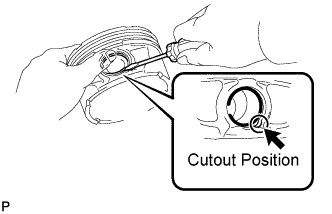 |
Using a screwdriver, install a new snap ring on one side of the piston pin hole.
| 4. INSTALL PISTON WITH PIN SUB-ASSEMBLY |
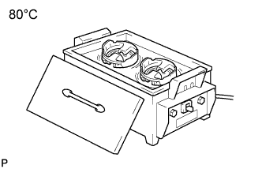 |
Gradually heat the piston to approximately 80°C (176°F).
Coat the piston pin with engine oil.
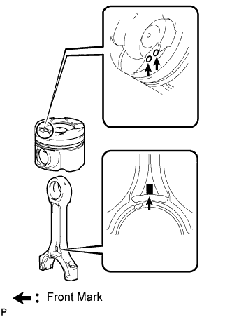 |
RH:
Align the front marks of the piston and connecting rod, and push in the piston pin with your thumb.
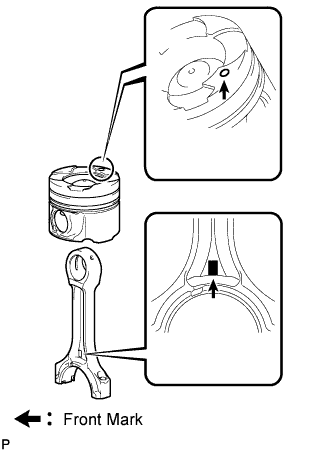 |
LH:
Face the front marks of the piston and connecting rod in opposite directions, and push in the piston pin with your thumb.
 |
Check the fitting condition between the piston and piston pin by trying to move the piston back and forth on the piston pin.
| 5. INSTALL PISTON PIN HOLE SNAP RING |
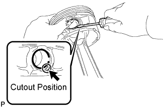 |
Using a screwdriver, install a new snap ring at the other end of the piston pin hole.
| 6. INSTALL PISTON RING SET |
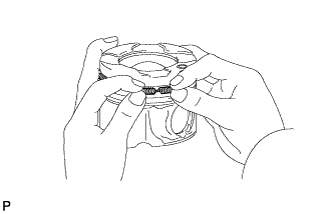 |
Install the oil ring expander by hand.
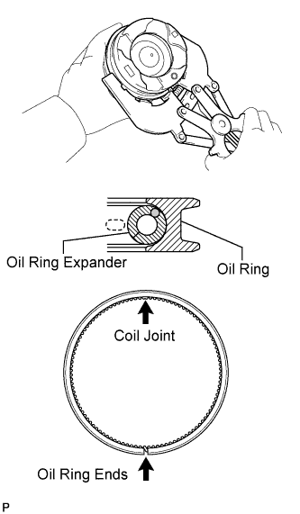 |
Using a piston ring expander, install the oil ring.
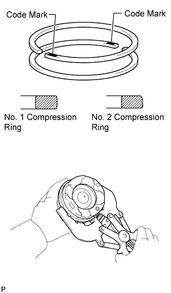 |
Using a piston ring expander, install the No. 1 and No. 2 compression rings so that the code marks are positioned as shown in the illustration.
| Item | Code Mark (w/ EGR System) | Code Mark (w/o EGR System) |
| No. 1 compression ring | 1T | No mark |
| No. 2 compression ring | T2 | 2T |
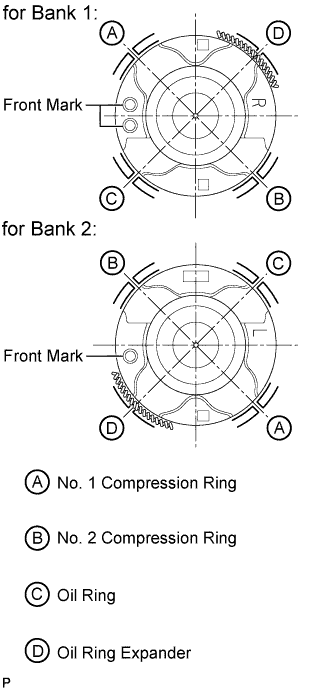 |
Position the piston rings so that the ring ends are as shown in the illustration.
| 7. INSTALL CONNECTING ROD BEARING |
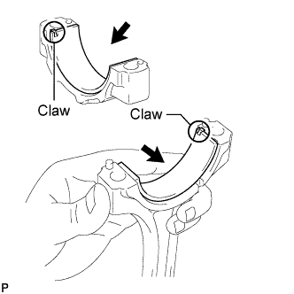 |
Align the bearing claw with the claw groove of the connecting rod cap.
Align the bearing claw with the claw groove of the connecting rod.
| 8. INSTALL CRANKSHAFT BEARING |
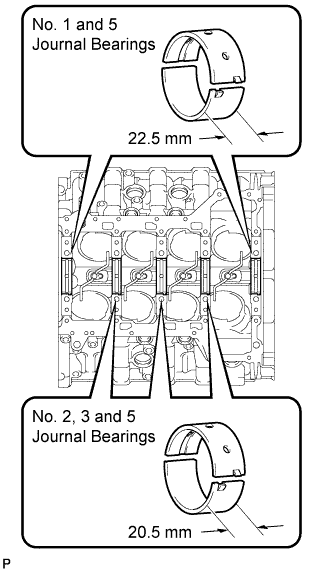 |
| Item | Standard Width |
| No. 1 and 5 journal bearings | 22.5 mm (0.886 in.) |
| No. 2, 3 and 4 journal bearings | 20.5 mm (0.807 in.) |
Clean each main journal and bearing.
 |
Align the bearing claw with the claw groove of the cylinder block, and push in the 5 upper crankshaft bearings.
 |
Align the bearing claw with the claw groove of the bearing cap, and push in the 5 lower crankshaft bearings.
| 9. INSTALL CRANKSHAFT |
 |
Apply new engine oil to the upper crankshaft bearing and install the crankshaft to the cylinder block.
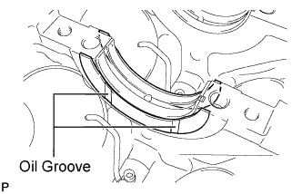 |
Push the crankshaft toward the rear thrust direction to create clearance, and install a thrust washer to the No. 3 journal position with the oil groove facing the front of the engine.
Push the crankshaft toward the forward thrust direction to create clearance, and install a thrust washer to the No. 3 journal position with the oil groove facing the rear of the engine.
 |
Examine the front marks and numbers and install the bearing caps to the cylinder block.
Apply a light coat of engine oil to the threads of the crankshaft bearing cap bolts.
 |
Temporarily install the crankshaft bearing cap bolts labeled A or the bolts labeled B.
| Item | Diameter | Length |
| A | 11 mm (0.433 in.) | 106 mm (4.17 in.) |
| B | 10 mm (0.394 in.) | 90.5 mm (3.56 in.) |
Uniformly tighten the 2 crankshaft bearing cap bolts for each bearing cap in several passes to ensure a proper fit.
Remove the crankshaft bearing cap bolts and spacers.
 |
Set the 2 cylinder block stiffening plates on the cylinder block.
 |
Step 1:
Apply a light coat of engine oil to the threads and under the heads of the 20 crankshaft bearing cap bolts A and B.
Install the 20 crankshaft bearing cap bolts. Using several steps, tighten the bolts uniformly in the sequence shown in the illustration.
 |
Step 2:
Mark the front side of the crankshaft bearing cap bolts A and B with paint.
Tighten the crankshaft bearing cap bolts A and B 90° in the sequence shown in the illustration.
 |
Step 3:
Tighten the crankshaft bearing cap bolts A another 90° in the sequence shown in the illustration.
 |
Check that the painted marks of bolt A are now at a 180° angle to the front.
 |
Check that the painted marks of bolt B are now at a 90° angle to the front.
Check that the crankshaft turns smoothly.
 |
Step 4:
Using several steps, install the 10 crankshaft bearing cap bolts uniformly in the sequence shown in the illustration.
Check that the crankshaft turns smoothly.
| 10. INSPECT CRANKSHAFT THRUST CLEARANCE |
 |
Using a dial indicator, measure the thrust clearance while prying the crankshaft back and forth with a screwdriver.
| 11. INSTALL PISTON SUB-ASSEMBLY WITH CONNECTING ROD |
Apply engine oil to the cylinder walls, pistons, and the surfaces of the connecting rod bearings.
Check the positions of the piston ring ends.
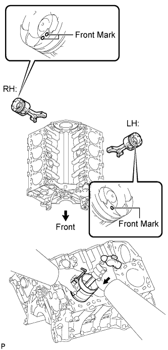 |
Using a hammer handle and piston ring compressor, press a piston and connecting rod assembly into each cylinder with the front mark of the piston facing forward.
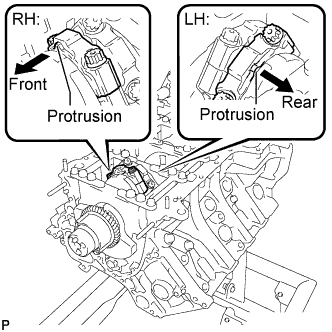 |
Install the connecting rod cap so that its protrusion is facing the correct direction.
Apply a light coat of engine oil to the threads and under the heads of the connecting rod cap bolts.
Step 1:
 |
Install and alternately tighten the bolts of the connecting rod cap in several steps.
Step 2:
 |
Mark the front side of each connecting rod cap bolt with paint.
Tighten the cap bolts 90°.
|
Check that the painted marks are now at a 90° angle to the front.
Check that the crankshaft turns smoothly.
| 12. INSPECT CONNECTING ROD THRUST CLEARANCE |
 |
Using a dial indicator, measure the thrust clearance while moving the connecting rod back and forth.